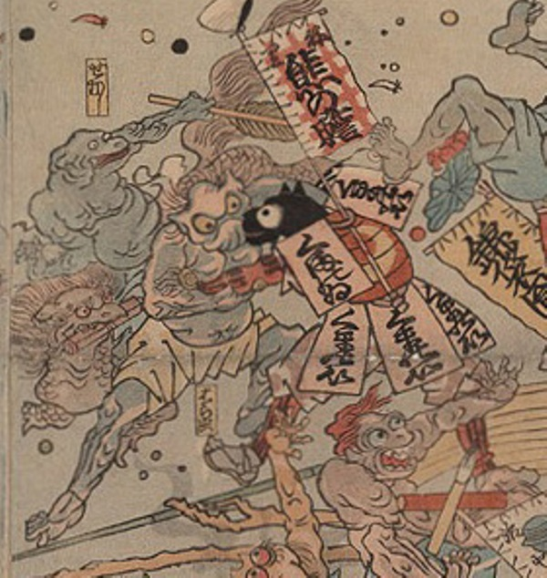

病気；ビョウキ，疫神；エキシン，はら虫；ハラムシ

はら虫と熊の胆が組み合っている。はら虫は鬼のような様態で、腰巻のみを着けている。熊の胆は赤い甲冑を着けている。頭部は黒犬のようである。
著作者：歌川芳虎／出典：親書誌：U426_nichibunken_0012：諸病諸薬の戦い；ショビョウショヤクノタタカイ／日付：2006／資源識別子：U426_nichibunken_0012_0004_0000
Copyright (c)2010- International Research Center for Japanese Studies, Kyoto, Japan. All rights reserved.